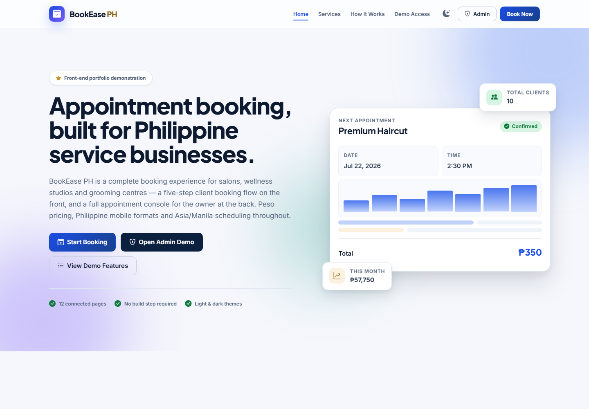
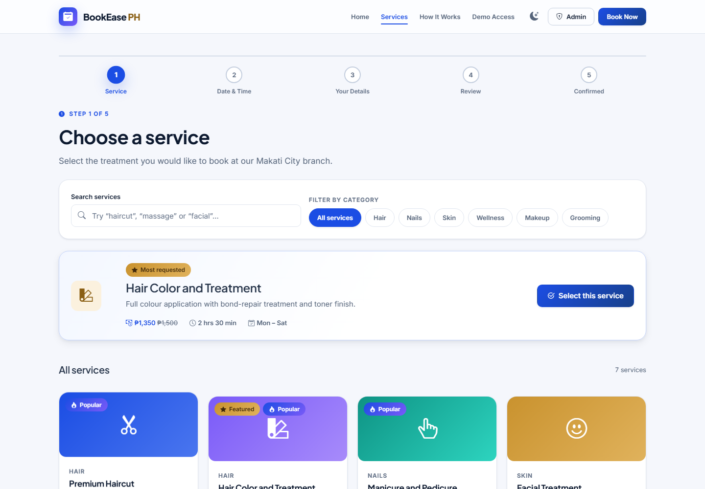

Problem addressed
Service businesses need an organized way for clients to request appointments while staff manage schedules, services, customer records, reminders, and conflicts.
Appointment Booking & Scheduling System
Status: Complete System with Accessible Demo Version. A Philippine-focused booking system for salons, wellness studios, grooming centers, and other service businesses.
Project Overview
Service businesses need an organized way for clients to request appointments while staff manage schedules, services, customer records, reminders, and conflicts.
Clients booking services, staff managing availability, and administrators maintaining appointments, services, clients, schedules, and reports.
Select service → choose date and time → enter validated client information → review details → confirm the booking and receive a reference.
The live Vercel version demonstrates client and administration workflows without connecting to the complete system backend or database.
Demo Version Tech Stack
This section describes the technologies used by the accessible portfolio demo.
The demo has no connected production server, server database, production authentication, live payment service, or cross-device synchronization. Browser data remains local to the visitor’s browser profile.
The accessible BookEase PH demo uses browser-based storage so visitors can test the client and administrative workflows without requiring a production server connection.
Complete System Tech Stack
This section describes the complete technical architecture of the full business system, including frontend, backend, database, API, security, testing, and deployment.
The accessible portfolio version is optimized for demonstration and can run without a connected production server. The Complete System Tech Stack section documents the full technical architecture used for the complete business system version.
Demo Screens


admin@bookease.phAdmin123The public portfolio demo runs independently for easy access. Backend and database services are represented under the Complete System Architecture and are not connected to the public demonstration deployment.